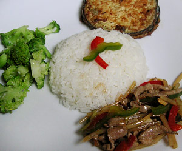

Gekochter broccoli
5 von 6broccoli zerkleinern und kurz in kochendem wasser blanchieren. fein gehackter knoblauch kurz andämpfen und über das gemüse geben. mit salz und zucker würzen.

broccoli zerkleinern und kurz in kochendem wasser blanchieren. fein gehackter knoblauch kurz andämpfen und über das gemüse geben. mit salz und zucker würzen.

Montagsplausch Nr. 105. Der Abend hiess «chinesischer abend».